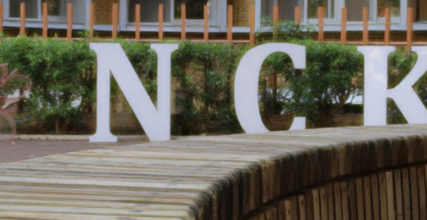
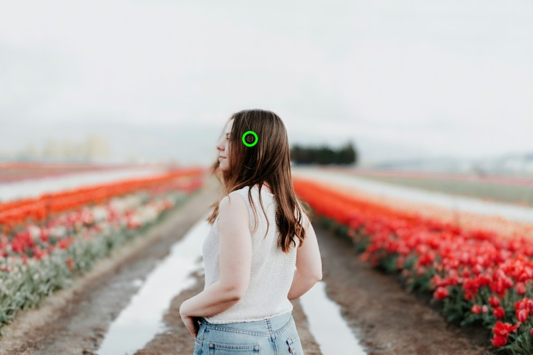
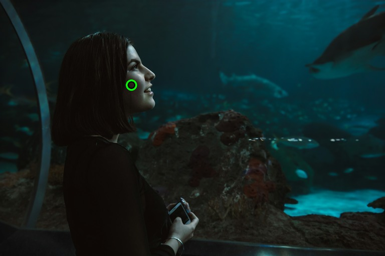
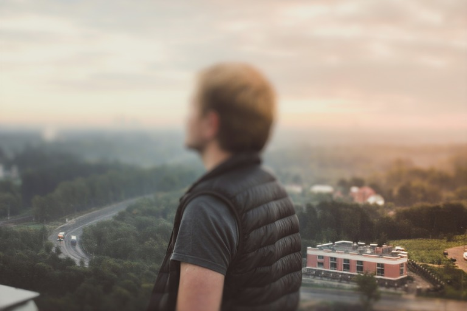
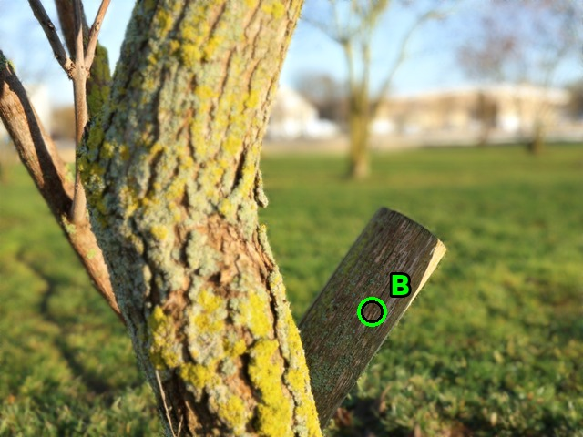
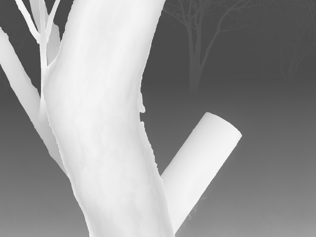
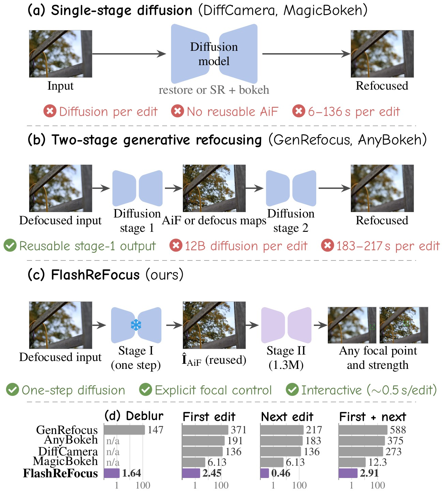

FlashReFocus
Interactive Image Refocusing in Seconds
FlashReFocus makes single-image refocusing interactive: click anywhere in a photograph to move the focal plane and turn the blur strength like an aperture ring. Diffusion runs once, to restore the all-in-focus image; every focal point, aperture and depth edit after that is one pass of a lightweight renderer.
Controls and applications
More from the same map
Six more controls, each only a different depth map given to the same renderer, and the applications they enable, from a detail dial for the restoration to refocusing video. Nothing is retrained.
Focus range
A thick focal plane: everything within a chosen depth range stays sharp, from the bottles alone to the floor and the street outside. The range and the aperture are separate dials, which one physical lens cannot separate.
Radial focus
A sharp disc follows a chosen centre and blur grows outward, the look of a Lensbaby lens; the depth map is replaced by the distance to the centre.
Tilt-shift at any angle
The sharp band tilts back and forth to follow the diagonal shoreline, so the surf and the black sand stay sharp while the slope blurs; the depth map is the distance to a rotated line.
Blur one side only
With the focus in the middle of a tug-of-war team, first only the background blurs and the two men in front stay sharp, then only the foreground blurs and the trees and tram behind turn sharp.
Three focal planes
Focal planes are added one at a time: the rock in front, then the soldier, then the parked car far behind, while the grass between them stays blurred.
Keep a subject sharp
A mask of the mushroom keeps it sharp while the focus moves from the grass in front to the trees behind, so the depth around it changes but the subject does not.
Portrait mode on sharp photographs
A photograph that is already sharp skips Stage I and goes straight to the renderer: the background rocks melt into bokeh behind the penguin, a divider compares the result with the sharp input, and focus then moves to the rocks, at about half a second per edit. This is the zero-shot bokeh rendering task of the paper.
Focus that follows a path
A drawn path along the train sets the focal point frame by frame, from the front car to the far end and back, like a cinematographer pulling focus.
Prompt-based focus
The prompts “the iced latte”, “the glass of coffee” and “the window” select a mask with CLIPSeg, an off-the-shelf segmenter that is not part of FlashReFocus; the focal depth is read from the mask and the subject is kept sharp.
Masks rewrite the depth
A SAM mask selects a region and the depth map inside it is rewritten; the renderer is unchanged. These are demonstrations, not results of the paper. A sixth idea, snapping depth edges to SAM edges around hair, made no visible difference (mean pixel change 2.7 of 255) and is left out.
Remove a photobomber
A click on the man beside her gives a SAM mask; his depth is pushed to the far background, so he melts into the bokeh while she stays sharp. No inpainting is involved.
Optical privacy blur
Six faces are marked and moved out of focus while everything else stays on the focal plane: the faces get lens blur instead of a mosaic.
Everyone in focus
Three people at different distances are clicked and placed on one focal plane; the people between them and the crowd behind stay blurred.
Blur per layer
Two SAM masks split the temple into a left layer, a right column and the rest; each layer gets its own depth offset, so each blurs by its own amount, then the order is reversed.
Depth for a flat picture
The door is almost flat, so its estimated depth gives little to refocus. A mask of the padlock and latch moves them in front of the door, and the focus can then move between them.
Video: focus pull
Each frame of a sharp clip goes through depth and the renderer, with depth and focal depth smoothed over time: focus moves from the rider on the right to the car on the left. The output changes less from frame to frame than the input (ratio 0.69), so no flicker is added.
Video: from subject to scenery
Focus starts on her hair, then racks out to the hills across the bay and back, while she moves in every frame. Frame-to-frame change ratio 0.66.
Video: click prompt with SAM
One click on the woman in the orange jacket gives SAM a point prompt; the resulting mask follows her down the street and keeps her sharp while the shop windows and the street behind her blur. Frame-to-frame change ratio 0.75.
Video: box prompt with SAM
Two boxes on the first frame, one around the horse and one around the jockey, are segmented by SAM; each later frame is prompted with the previous masks' boxes, so both stay sharp from the far shot to the close-up while the track and the stands blur. Frame-to-frame change ratio 0.69.
Detail dial ω
Stage I blends a pixel pass and a detail pass with the weight ω. Low values stay closest to the input; higher values sharpen the letters and the hedge behind them.

On the validation sets of the paper, PSNR peaks at ω = 0.5–0.75 while LPIPS, DISTS and FID are best at ω = 1.25–1.5; beyond that, extrapolated detail hurts every metric. The released model uses ω = 1.25.
Photographs you can refocus later
A focal stack of 24 focal depths × 6 apertures is rendered once from one photograph, so it can be refocused anywhere afterwards, like a light-field camera.
The video plays frames of this stack: the focal plane sweeps from near to far at f/2.8, then the aperture ring turns from f/2.8 to f/16 and back. Try the vintage car in the click-to-refocus card.
Abstract
Refocusing should not regenerate the photograph
Single-image refocusing changes the focal plane and depth of field after capture. Users try many focal choices on one photograph, so each edit must be fast and must leave the content alone.
Where prior methods fall short
- Minutes per edit. Single-stage and two-stage generative methods run a large diffusion model for every focal edit; at 1536×1536 a further edit takes 217 s with GenRefocus and 183 s with AnyBokeh.
- Content changes between edits. Diffusion resynthesizes the whole image, so moving only the focal point can also alter other regions; in-focus PSNR against the input is 29.0 dB for GenRefocus.
- Implicit focus control. Focus and blur enter as implicit conditions, with no explicit control for designed effects such as tilt-shift.
- Soft newly focused regions. Recovering detail and rendering blur in one pass often leaves regions brought into focus insufficiently sharp.
- Lightweight renderers cannot restore. Feed-forward bokeh renderers are fast but only add blur, so anything captured out of focus stays blurred.
What FlashReFocus does instead
- Restore once. A one-step diffusion deblurrer with a decoder refiner recovers the all-in-focus image, the only part that is highly ill-posed and needs a generative prior.
- Render every edit in 0.46 s. A lightweight renderer reuses that image and its depth, so a complete refocus takes 2.45 s and each further edit 0.46 s.
- Content stays put. Every edit is a residual to the same reconstruction; in-focus PSNR against the input is 44.4 dB.
- Explicit defocus map. Focus, aperture and spatial blur are set by an explicit map with defocus-bias attention, so editing the map gives tilt-shift, two focal planes and depth swaps.
- Generalizes to unseen optics. On EBB! Val176 and our three-camera 3CReal benchmark, FlashReFocus leads the evaluated methods in fidelity and perceptual quality.
01 / Results
Restored once, from a defocused photograph
Stage I recovers the all-in-focus image that every later edit reuses. Drag the divider on any card; the left side is the input and the right side is FlashReFocus.
Inputs at a long side of 1280, restored in one diffusion step with ω = 1.25 and the decoder refiner.
02 / Interactive
One restored image, every focal edit
Click anywhere in the photograph to focus there, and turn the aperture ring to set the depth of field. Every frame is a renderer output from one restored image.
Aperture ring
Scroll the mouse wheel over the ring to turn it, or click a stop.
Show
- Focal point
- –
- Focal depth Df
- –
- Aperture
- –
- Strength K
- –
Precomputed renderer outputs from one restored image: 24 focal depths × 6 apertures, rendered at 1280 px and played back here. The aperture ring uses a thin-lens mapping K = 2.8 / N, so K = 1, the trained maximum, at f/2.8; on MODEST, strengths selected for real apertures rise with the aperture (Spearman ρ = 0.985 against 1/N). Photographs from Unsplash and DIV2K.
With the focal point fixed, the strength behaves like an aperture: the background blur grows while the subject stays sharp. The renderer is trained for strengths 0 to 1; values from 1 to 2 extrapolate past training. Strength controllability (LVCorr) is 0.857 on LFDOF and 0.839 on 3CReal, against 0.690 and 0.666 for GenRefocus and 0.672 and 0.672 for AnyBokeh (both on the first 20 scenes of each set).
Portraits
Unsplash portraits with a shallow depth of field. Stage I restores the out-of-focus background once; every view after that is one renderer pass on the same restored image, at strength 0.8.

Strength as an aperture
With the focus on the face, the background blur grows with the strength while the face stays sharp.

03 / Real time
Ten edits while GenRefocus is 5% into its first
In the recording, both methods start on the same photograph and each FlashReFocus result appears after its measured time; GenRefocus needs 370.65 s for its first refocus. The race below adds AnyBokeh on the same clock.
Played in real time at 1536×1536 on one NVIDIA RTX PRO 6000. The scripted session was timed in an earlier run (2.50 s for the first refocus and 0.47 s per further edit); the paper reports 2.45 s and 0.46 s. Frames are model outputs shown at a long side of 1024.
Simulated from the measured times in the paper's cost table (1536×1536, one NVIDIA RTX PRO 6000, after warm-up), not a recording. Each bar shows the edit in progress; the count on the right is the number of finished edits.
04 / Beyond one lens
The defocus map is the control
The renderer reads an explicit depth-derived defocus map, so editing that map produces blur fields that a single physical lens cannot.
Tilt-shift
Replacing the depth given to the renderer with a vertical ramp keeps a horizontal band sharp regardless of scene depth, the miniature look of a tilted lens.

Two focal planes
Each pixel is blurred by its distance to the nearer of two planes, so two subjects at different depths stay sharp while the space around them blurs.




05 / Method
Restore once, render every edit
Recovering an all-in-focus image from a defocused photograph is highly ill-posed and benefits from a generative prior, whereas rendering blur is largely determined by depth and the focal plane. FlashReFocus therefore splits refocusing into two stages with very different costs.
- Stage I adapts a diffusion prior to a single step with dual LoRAs: the weight ω blends a pixel pass and a detail pass to balance fidelity and perceptual quality, and a lightweight decoder refiner restores fine structure such as edges and text.
- Stage II turns monocular depth and the selected focal point into an explicit defocus map and renders each edit as a residual to the fixed reconstruction, in one feed-forward pass of a 1.3M-parameter network.
- Defocus-bias attention favors tokens of similar blur magnitude, so blur changes sharply at depth boundaries and focused content is left as restored.

(a) Single-stage diffusion and (b) two-stage generative refocusing run a large diffusion model for every focal edit. (c) FlashReFocus restores the all-in-focus image once and renders each new focal setting with a lightweight defocus-aware network. (d) Seconds at 1536×1536 for every stage of a refocusing session.

Abstract
Single-image refocusing changes the focal plane and depth of field of a photograph after capture. Users compare focal choices on one photograph, so content stability across edits matters alongside quality and speed. Recent generative methods rerun large diffusion models for every edit, even when they first restore an all-in-focus image, so content can change inconsistently between edits. Yet only this restoration is highly ill-posed and benefits from a generative prior, whereas rendering blur is largely determined by depth and the focal plane. We therefore propose FlashReFocus, which runs diffusion once per photograph and renders each edit with a lightweight network. A one-step diffusion deblurrer with a decoder refiner recovers fine detail efficiently while balancing fidelity and perceptual quality. The renderer uses an explicit defocus map for control and defocus-bias attention to promote information exchange between tokens with similar blur magnitudes. Because every edit reuses the same reconstruction, in-focus content stays consistent across edits, and editing the map enables tilt-shift and two-plane effects. We further collect 3CReal, a benchmark of 89 pairs from three camera–lens systems, to evaluate generalization to unseen optics. For zero-shot bokeh rendering on EBB! Val176 and 3CReal, FlashReFocus leads the evaluated methods in fidelity and perceptual quality. At 1536×1536, a complete refocus takes 2.45 s and each subsequent edit 0.46 s on one RTX PRO 6000.
06 / Numbers
Benchmarks
Excerpts of the paper's tables. The full tables compare seven deblurring and nine bokeh-rendering methods and add RealBokeh validation, LFDOF and MODEST.
Seconds per refocus
1536×1536 on one NVIDIA RTX PRO 6000, after warm-up. † Renders directly from the input, without restoration.
Refocusing cost
| Method | Params (B) | First (s) | New focus (s) | TFLOPs first | TFLOPs new | Mem. (GiB) |
|---|---|---|---|---|---|---|
| DiffCamera | 12.33 | 136.35 | 136.35 | 19,363 | 19,363 | 28.37 |
| GenRefocus | 18.30 | 370.65 | 217.32 | 42,061 | 24,763 | 42.82 |
| AnyBokeh | 12.09 | 191.38 | 183.38 | 25,368 | 24,240 | 24.93 |
| BokehDiff† | 3.83 | – | 3.43 | – | 73.4 | 11.82 |
| MagicBokeh† | 1.73 | – | 6.13 | – | 113 | 5.29 |
| FlashReFocus | 1.70 | 2.45 | 0.46 | 113 | 0.85 | 16.84 |
First covers restoration and the first rendering; new focus is each further edit on the same image.
Zero-shot bokeh rendering
| Method | PSNR ↑ | SSIM ↑ | MS-SSIM ↑ | LPIPS ↓ | DISTS ↓ | CLIP-I ↑ | LVCorr ↑ |
|---|---|---|---|---|---|---|---|
| EBB! Val176 | |||||||
| BokehMe | 24.52 | 0.8929 | 0.9007 | 0.2020 | 0.1235 | 0.9696 | 0.7879 |
| BokehDiff | 23.87 | 0.8568 | 0.8745 | 0.2137 | 0.1182 | 0.9636 | 0.8281 |
| GenRefocus | 23.80 | 0.8680 | 0.8815 | 0.2025 | 0.1111 | 0.9644 | 0.6898 |
| MagicBokeh | 23.14 | 0.8441 | 0.8629 | 0.2398 | 0.1445 | 0.9331 | 0.7987 |
| AnyBokeh | 22.81 | 0.8611 | 0.8902 | 0.2291 | 0.1308 | 0.9416 | 0.6720 |
| FlashReFocus | 24.52 | 0.8917 | 0.9032 | 0.1805 | 0.1039 | 0.9725 | 0.8570 |
| 3CReal | |||||||
| BokehMe | 27.58 | 0.8835 | 0.9342 | 0.2471 | 0.1569 | 0.9761 | 0.7768 |
| BokehDiff | 25.80 | 0.8115 | 0.8610 | 0.3112 | 0.1589 | 0.9566 | 0.7972 |
| GenRefocus | 26.38 | 0.8528 | 0.9218 | 0.2426 | 0.1493 | 0.9715 | 0.6658 |
| MagicBokeh | 25.64 | 0.8329 | 0.8957 | 0.2543 | 0.1553 | 0.9430 | 0.7589 |
| AnyBokeh | 24.74 | 0.8388 | 0.9196 | 0.2298 | 0.1378 | 0.9543 | 0.6719 |
| FlashReFocus | 27.98 | 0.8855 | 0.9375 | 0.2178 | 0.1368 | 0.9807 | 0.8391 |
Every method receives the same all-in-focus input and focal point. 3CReal contains 89 small- and large-aperture pairs from three camera–lens systems excluded from renderer training. LVCorr in the EBB! block is measured on LFDOF; for GenRefocus and AnyBokeh, which need a full diffusion pass per strength, it uses the first 20 scenes of each set. Bold marks the best among all nine methods in the paper; DeepLens, not shown here, has the highest LVCorr (0.887 and 0.875).
Defocus deblurring
| Method | DPDD | RealDOF | ||||
|---|---|---|---|---|---|---|
| PSNR ↑ | LPIPS ↓ | DISTS ↓ | PSNR ↑ | LPIPS ↓ | DISTS ↓ | |
| Restormer | 25.98 | 0.1762 | 0.1204 | 25.08 | 0.2863 | 0.1573 |
| GenRefocus | 23.93 | 0.1686 | 0.0843 | 23.49 | 0.2447 | 0.1148 |
| FlashReFocus (ω = 1) | 24.61 | 0.1718 | 0.0980 | 23.70 | 0.2527 | 0.1227 |
| FlashReFocus + refiner (ω = 1.25) | 25.37 | 0.1557 | 0.0870 | 24.25 | 0.2437 | 0.1187 |
Bold marks the best among all nine entries in the paper's deblurring table; the highest PSNR belongs to regression restorers (ViTDeblur 26.12 on DPDD, DRBNet 25.74 on RealDOF), which can over-smooth fine detail.
07 / FAQ
Questions
Why run diffusion only once?
Recovering detail that the lens never captured sharply is ill-posed, so it benefits from a generative prior. Rendering blur for a chosen focal plane is largely determined by depth and the circle of confusion, so a compact feed-forward network suffices. FlashReFocus spends diffusion on the first problem only and reuses its result for every edit.
Does the subject change between edits?
Every edit is rendered as a residual to the same restored image, so in-focus content stays close to it. On three 3CReal scenes with matched background blur, in-focus PSNR against the restored image is 44.4 dB for FlashReFocus and 29.0 dB for GenRefocus, which regenerates the image at every edit.
How fast is it, and on what hardware?
At 1536×1536 on one NVIDIA RTX PRO 6000, a complete refocus (restoration plus the first edit) takes 2.45 s with 16.84 GiB peak memory, and each further edit takes 0.46 s because the restored image and depth are reused.
What can I control?
The focal point, the blur strength, and the defocus map itself. The renderer is trained for strengths 0 to 1; larger values extrapolate. Editing the map gives effects beyond one physical lens, such as tilt-shift and two focal planes.
What is 3CReal?
A benchmark of 89 small- and large-aperture pairs captured with three camera–lens systems that are excluded from renderer training, used to test generalization to unseen optics. It is available on Hugging Face.
Can I try it?
Yes. The Hugging Face demo lets you upload a photograph, click a focal point and set the strength; code is on GitHub.
Citation
BibTeX
@misc{cheng2026flashrefocus,
title = {FlashReFocus: Interactive Image Refocusing in Seconds},
author = {Cheng, Ching-Heng and Lee, Chia-Ming and Chang, Ming-Ching and
Li, Xin and Hsu, Chih-Chung},
year = {2026},
eprint = {2610.23297},
archivePrefix = {arXiv},
primaryClass = {cs.CV},
url = {https://arxiv.org/abs/2610.23297}
}